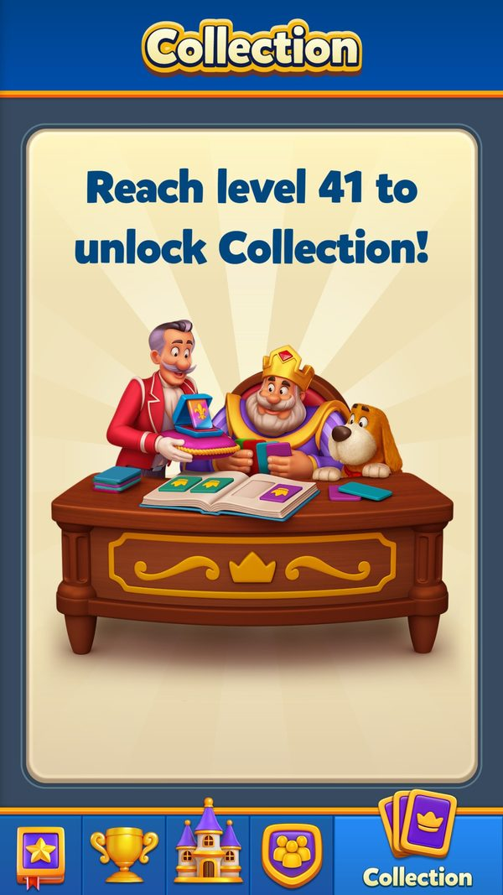
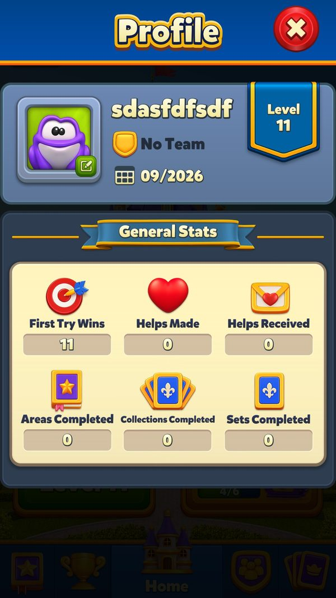
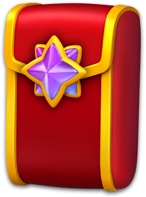

Mùa thẻ (Seasonal Card Collection): gói thẻ, thẻ trùng và sợi dây nối mọi event
Gói thẻ đến từ đâu, mở gói chọn thẻ thế nào, thẻ trùng đi đâu, grand prize ra sao và vì sao mùa thẻ nối mọi event?
Bài đi theo mùa thẻ 15 (config server thật v305): người chơi nhận gói thẻ từ 34 nguồn, mở gói, gom set, đổi thẻ trùng thành sao, xin/tặng thẻ trong đội, rồi nhận grand prize. Đọc khoảng 8 phút. Đọc kèm Kinh tế liên event (cơ chế gắn gói thẻ vào thưởng event khác).
- ✅ Giá trị thật: lấy thẳng từ code, config server thật, save hoặc ảnh chụp khi chơi.
- 🧪 Ví dụ minh họa: con số đầu vào giả định để thấy cơ chế chạy; cách tính trong ví dụ là cách tính thật trong code.
- Tên kỹ thuật (class, method, key) để trong ngoặc hoặc ở dòng bằng chứng, để tra code khi cần.
Tóm tắt nhanh
- Mùa 15 đang chạy ~2 tháng.Ví dụ ✅ Vòng 20, config v305, mùa 15, còn 4.524.613.929 ms lúc đo (~52,4 ngày, hết 01/11/2026 08:00 UTC); cần phiên bản client ≥ 35500; chế độ 'mùa vô hạn' và 'túi động' đều bật.
- Mở ở level 41, tải trước từ level 31.Ví dụ ✅ Ảnh 06/10, level 11: tab Collection 'Reach level 41 to unlock Collection!'. Art mùa 15 gồm 21 bundle (~57 MB).
- Một mùa = 16 set × 9 thẻ, khó dần.Ví dụ ✅ 144 thẻ: 1★ 33, 2★ 28, 3★ 23, 4★ 18, 5★ 42. Set 1 = tám thẻ 1★ + một 2★; set 15 = bốn 4★ + năm 5★; set 16 = chín thẻ kim cương 5★.
- Gói thẻ đến từ 34 nguồn. Event nào trả bậc 'mốc' thì mùa thẻ gắn thêm gói.Ví dụ ✅ Pinata mốc 1/2/3 → CP2 / CP3 / CP4; King's Cup hạng 1 → CP6; Weekly hạng 1 → CPG; Royal Pass Gold mốc 30 → CPG.
- Chỉ vòng event bắt đầu sau khi mùa 'đóng dấu' mới được gắn gói.Ví dụ ✅ Mốc King's Cup = 716, vòng đang chạy 720 → được gắn. Royal Pass dùng 'cửa sổ 10 vòng kế tiếp'; Area và Daily Rewards luôn được gắn.
- Thẻ trùng không mất: đổi thành sao, sao mở rương — rương lại ra gói.Ví dụ ✅ Rương 100 / 250 / 500 sao; thẻ vàng trùng = 10 sao; rương bậc 3 = 1 H, 1 Ca, 1 J, 1 A, 1 CP3, 1 CP4, 1 CPG.
- Đích cuối là grand prize + huy hiệu.Ví dụ ✅ Stage 0 (15 set): 4028 PB + 10 PL + 10000 C; stage 1: 4029 PB + 15 PL + 15000 C; stage 2: 15 PL + 15000 C.
Ví dụ xuyên suốt: một người chơi đi hết stage 0 mùa 15
✅ Config thật mùa 15 (v305) và ảnh chụp 06/10. 🧪 Giả định: người chơi lên level 41 khi mùa đang chạy, có đội, các event khác đang chạy theo lịch thật; số thẻ trong mỗi gói lấy theo tên gói (CP4 = 4 thẻ, suy luận); thẻ ra gì là giả định.
| Lúc | Người chơi làm gì | Game phản hồi | Kết quả |
|---|---|---|---|
| ✅ Level 11 (06/10) | Mở tab Collection | 'Reach level 41 to unlock Collection!' | Chưa vào được |
| 🧪 Level 31 | — | Tải ngầm 21 bundle mùa 15, kiểm tra CRC, lưu kết quả kiểm tra | Sẵn art trước khi mở |
| 🧪 Level 41 | Vào Home | Vào mùa (còn ≥ 30 phút): hộp bắt đầu mùa + gói thẻ khởi đầu | Có thẻ đầu tiên |
| 🧪 Cùng tuần | Nhận Pinata mốc 3, Book of Treasure bậc 2, King's Cup hạng 3 | Mỗi lần nhận, mùa thẻ gắn thêm gói: 1 CP4, 1 CP2, 1 CP3 | Mở được 9 thẻ (suy luận 4 + 2 + 3) |
| 🧪 Mở gói | Bấm mở | Rút theo trọng số sao 30 / 27 / 22 / 17 / 12; 7 thẻ mới, 2 thẻ trùng | Thẻ trùng đổi thành sao |
| 🧪 Set 1 đủ 9 thẻ | — | Hoàn thành set 1 (dễ nhất: 8 thẻ 1★) | +500 C |
| 🧪 Đủ 100 sao | Mở rương thẻ trùng bậc 1 | Rương: 1 R, 1 T, 1 CP3 | Thêm 3 thẻ |
| 🧪 Thiếu 1 thẻ vàng set 9 | Xin thẻ trong chat đội | Được xin lại sau 24 giờ; đồng đội tặng (mỗi người tối đa 3 thẻ / ngày) | Đủ set 9 → 1 J |
| 🧪 Đủ 15 set | — | Hoàn thành stage 0 → grand prize + huy hiệu | 4028 PB, 10 PL, 10000 C; mở stage 1 (16 set, có set kim cương) |
| ✅ 01/11 08:00 UTC | — | Vòng mùa 15 hết hạn: nhận nốt thưởng chưa nhận, xoá art mùa cũ | Chờ mùa 16 |
Tổng coin từ set ở stage 0 chỉ 3750 C, còn grand prize là 10000 C — gần như toàn bộ giá trị nằm ở việc gom ĐỦ bộ, nên các set cuối (nhiều thẻ 5★) quyết định cảm giác cả mùa.



Ảnh chụp minh họa (3)
Ảnh chụp từ game thật trên LDPlayer. Bấm ảnh để phóng to, phím ← → để chuyển ảnh.


Luồng hoạt động (11 bước)
Tóm lại: server mở mùa → tải art (từ level 31) → vào mùa (level 41) → event khác trả bậc thì gắn gói thẻ → mở gói rút thẻ → thẻ mới đủ set nhận thưởng; thẻ trùng thành sao mở rương → đủ stage nhận grand prize → hết mùa nhận nốt
- 1Server mở mùaServerGói tin mùa mang mã vòng, thời gian còn lại, config; client kiểm tra config hợp lệ và phiên bản tối thiểu.Ví dụ ✅ Mùa 15, v305, minClientVersion 35500, còn ~52,4 ngày.
SeasonalCardCollectionManager.UpdateInfo / SetEventVariables / CheckConfigMinClientVersion; PingResponse_SeasonalCardCollectionInfo_Config_v305.json - 2Tải art mùaClientTừ level 31 tải các bundle của mùa (set, icon set, khu, chat, hộp thoại, bản dịch), kiểm tra CRC và nhớ kết quả; thử tối đa 3 lần.Ví dụ ✅ Mùa 15: season15set1..16, seticon, section, chat, dialogs, localization — 21 bundle, ~57 MB.
SeasonalCardCollectionBundleManager.AddAndQueueForDownloadBundles / CheckAllCRCs; SeasonalCRCCacheManager; Mem_SeasonInfo_bundles.json - 3Vào mùaClientLevel ≥ 41 và mùa còn ≥ 30 phút → vào mùa, hiện hộp bắt đầu, tặng gói khởi đầu; nhóm A/B giảm thưởng được chốt lúc này.Ví dụ ✅ Log 'Enter season for eventId: {0}, seasonId: {1}.'; nguồn quà 'SeasonalCollectionStart'.
SeasonalCardCollectionManager.EnterSeason / TryAddStartDialog; SeasonalCardCollectionPackHelper.GiveStartPackReward - 4Event khác trả gói thẻClientKhi một event trao bậc / hạng, mùa thẻ kiểm tra vòng đó có 'sau mốc đóng dấu' không, rồi gắn gói theo bảng của mùa.Ví dụ ✅ Mốc Magic Cauldron 160, vòng đang chạy 162 → bậc 2 / 6 / 9 / hoàn thành của Magic Cauldron được gắn CP2 / CP3 / CP4 / CP6.
EventRewardOverrider.GetFirstOverrideConfigForSeasonalCardCollection / CheckLastEventIdForSeasonalCardCollection (pseudo-C) - 5Mở góiClientGame chọn cách rút theo loại gói (mặc định, ưu tiên thẻ thiếu, đảm bảo thẻ mới…); ở chế độ túi động thì rút theo trọng số sao và trọng số vàng / kim cương.Ví dụ ✅ Trọng số sao 30 / 27 / 22 / 17 / 12; vàng 8, kim cương 4. Bảng mở gói hiện ngay sau hộp nhận thưởng của event.
SeasonalCardCollectionManager.GivePackRewards / DisplayPackRewards; SeasonalCardCollectionPackHelper (GiveDefaultPackReward, GiveMissingPackReward, GiveGuaranteedDeckReward…) - 6Bù gói tímClientĐếm số gói tím liên tiếp chỉ ra thẻ trùng; càng nhiều lần thì khả năng ép thẻ mới càng cao.Ví dụ ✅ Hệ số [0, 0, 33, 66, 100]: gói tím thứ 3, 4, 5 liên tiếp toàn trùng → 33% → 66% → 100% (suy luận đơn vị %).
SeasonalCardCollectionPackHelper.ShouldGiveNewCardForPurplePackRule; ConsecutiveDuplicatePurplePackCount - 7Thẻ mới → đủ setClientĐủ 9 thẻ một set thì nhận thưởng set của stage hiện tại.Ví dụ ✅ Stage 0: set 1 = 500 C, set 2 = 1 R, set 3 = 1 T, set 4 = 1 L, set 5 = 750 C… set 15 = 1500 C.
SeasonalCardCollectionManager.IncrementCardCount / CheckIfSetCompleted / SetCompleted - 8Thẻ trùng → sao → rươngPlayerThẻ trùng cộng sao (theo mức sao, thẻ vàng tính riêng); đủ sao mở 3 bậc rương.Ví dụ ✅ 100 / 250 / 500 sao; thẻ vàng trùng = 10 sao. 🧪 Trùng một thẻ 3★ → +3 sao (suy luận theo mức sao của thẻ).
SeasonalCardCollectionManager.IncrementSalvagedCardCount / GetHighestClaimableDuplicateChestTier / SalvageDuplicateCards - 9Đủ stage → grand prizePlayerXong mọi set của stage thì nhận grand prize; chỉ 2 stage đầu có huy hiệu; mùa vô hạn cho chơi tiếp stage sau.Ví dụ ✅ Số set dùng mỗi stage: 15 / 16 / 16.
SeasonalCardCollectionManager.CanClaimStage / CompleteStage / GetCurrentStageBadgeId; MaxStageCountWithBadge = 2 - 10Xin và tặng thẻPlayerTặng tối đa 3 thẻ / ngày; xin thẻ trong chat đội mỗi 24 giờ; thẻ được tặng đến qua thư hệ thống.Ví dụ ✅ Kết quả tặng: Ok, Fail, EventNotActive, AlreadyDonated, LimitReached.
SeasonalCardCollectionManager.SendCardToUser / TryAddGiftReceivedDialog; SeasonalCardCollectionSendCardHelper.OnAskCardButtonClicked; DailyCardSendLimit = 3 - 11Hết mùaClientTrả nốt thưởng chưa nhận, xoá tiến độ và art mùa cũ; thông tin mùa sau (nếu server gửi) dùng để tải trước.Ví dụ ✅ Log 'Reset all progress on season exit.'.
SeasonalCardCollectionManager.ExitSeason / ClaimUnclaimedRewards; SeasonalCardCollectionBundleManager.RemoveAllSeasonBundlesFromPersistent
Nhánh & ngoại lệ
| Khi | Thì | Ví dụ | Bằng chứng |
|---|---|---|---|
| Client cũ hơn phiên bản tối thiểu | Mùa không chơi được; gói thẻ từ event khác cũng không được gắn (suy luận). | ✅ 'Client version is not enough for the seasonal card collection event.' | SeasonalCardCollectionManager.CheckConfigMinClientVersion / get_ShouldGiveCardReward |
| Mùa còn dưới 30 phút | Không vào mùa mới. | 🧪 Lên level 41 lúc mùa còn 20 phút → chờ mùa sau. | SeasonalCardCollectionManager.MinEventRequiredTimeInMs = 1.800.000 |
| Bundle chưa tải hoặc CRC sai | Khu mùa thẻ chưa hiện; tải lại tối đa 3 lần. | 🧪 Mạng yếu, set 12 tải lỗi → khu Collection chờ tới khi đủ bundle. | SeasonalCardCollectionBundleManager.CheckAllCRCs; SeasonalCRCCacheManager.ClearCRCCache |
| Vòng event bắt đầu trước khi mùa đóng dấu | Không được gắn gói của mùa mới. | 🧪 Một vòng King's Cup mã 716 (đúng bằng mốc) → không có gói; vòng 717 trở đi mới có. | EventRewardOverrider.CheckLastEventIdForSeasonalCardCollection (eventId > mốc) |
| Tặng thẻ lỗi hoặc chạm giới hạn | Server trả lỗi, thẻ được hoàn; reset số thẻ đã tặng trong ngày cần mạng. | ✅ 'Daily sent card count can't reset because of internet connection!'. | SeasonalCardCollectionManager.RefundSentCard / TryResetDailySentCardCount |
| Server tắt mùa thẻ | Khu mùa thẻ ẩn. | ✅ 'Seasonal Card Collection is disabled by backend.' | SeasonalCardCollectionManager.DisabledByBackend |
| Còn tiến độ của hệ thẻ cũ | Đổi tiến độ cũ thành thưởng một lần. | 🧪 Người chơi lâu năm còn wildcard cũ → nhận gói quy đổi khi mở mùa mới. | SeasonalCardCollectionManager.TryAddOldCardCollectionCashOutFlow / OldCardCollectionCashedOut |
| Server muốn đổi bảng gói giữa mùa | Có bảng gói thứ hai và mốc thứ hai cho 'tháng thứ hai' của mùa. | ✅ Mùa 15: hai bảng giống hệt nhau, chưa có mốc thứ hai. | SeasonalCardCollectionManager.GetSecondOverrideConfigForPackReward / IsSecondOverrideConfigReady |
Gói thẻ gắn vào từng nguồn (mùa 15, v305)
Tóm lại: event trả bậc → mùa thẻ tra bảng theo mã event và bậc → gắn gói
Mã bậc khác nhau theo event: có segment thì segment × 1000 + bậc; xếp hạng dùng 1001–1003; 1000 thường là hoàn thành; Propeller Rush dùng kiểu nhóm × 10 + bước (suy luận).
| Nguồn (mã client) | Bậc / hạng → gói | Ví dụ |
|---|---|---|
| Pinata Party (0) | 1 → CP2 · 2 → CP3 · 3 → CP4 | 🧪 Đập xong 3 mốc → 3 gói, 9 thẻ |
| Balloon Rise (1) | bậc 2 → CP2 · 5 → CP3 · 8 → CP3 · 10 → CP4 (lặp cho segment 1000..7000) | |
| Lightning Rush (2) | 1 → CP4 | |
| Hidden Temple (3) | 2 → CP2 · 3 → CP3 · 4 → CP4 · 5 → CP6 · 104/106/108/110 → CP2/CP3/CP4/CP6 | Mã 1xx: suy luận cho bản tầng mới |
| Magic Cauldron (4) | 2 → CP2 · 6 → CP3 · 9 → CP4 · 1000 → CP6 | 🧪 Xong cả vòng → thêm 1 CP6 |
| Book of Treasure (5) | 2, 5, 9 → CP2 · 7, 14 → CP3 · 16, 24 → CP4 · 22 → CP6 | |
| Propeller Madness (6) | 2 → CP2 · 6, 11 → CP3 · 13, 15, 19 → CP4 · 18 → CP6 | |
| Archery Arena (7) | mốc 2003, 2008 → CP2 · 2011 → CP3 · 2020 → CP4 · hạng 1001/1002/1003 → CP6/CP4/CP3 | |
| Royal Pass Free (9) | 3, 5 → CP2 · 8, 10, 15, 25 → CP3 · 13, 20, 23 → CP4 · 30 → CP6 | |
| Royal Pass Gold (10) | 3, 5, 10, 15, 25 → CP4 · 8, 13, 20, 23 → CP6 · 30 → CPG | 🧪 Nhánh Gold cho gói to hơn ở cùng mốc |
| Weekly Leaderboard (11) | hạng 1 → CPG · 2 → CP4 · 3 → CP3 | |
| Area (12) | 1 → CP4 | Luôn được gắn |
| King's Cup (13) | hạng 1 → CP6 · 2 → CP4 · 3 → CP3 · 4..10 → CP2 | |
| Team Treasure (14) | rương 1 → CP2 · 2 → CP3 · 3 → CP4 | |
| Dragon Nest (15) | 3 → CP4 · 1000 → CPG | |
| Space Mission (16) | 1 → CP2 · 2 → CP3 · 3 → CP4 · 102/103 → CP2/CP3 | |
| Sky Race (17) | hạng 1 → CP4 · 2 → CP3 · 3 → CP2 · 101 → CP3 | |
| Team Tournament (18) | hạng đội 1001/1002/1003 → CP6/CP4/CP2 · mốc 2005/2006/2007 → CP2/CP3/CP4 | |
| Mission Pursuit (19) | rương 1 → CP3 · 2 → CP4 · 3 → CP6 | |
| Mission Control (22) | 2 → CP2 · 3 → CP3 · 4 → CP4 · 1000 → CP6 | |
| Train Journey (26) | 1 → CP2 · 2 → CP3 · 3 → CP4 · 1000 → CPG | |
| Ocean Odyssey (27) | 1 → CP2 · 2, 3 → CP3 · 4 → CP4 · 5 → CP6 · 101..104 / 201..204 → CP2/CP3/CP4/CP6 | |
| Daily Lightning Rush (28) | 1 → CP3 · 2, 3, 1000 → CP4 | |
| Puzzle Break (29) | 2 → CP2 · 3 → CP3 · 4 → CP4 · 5, 15 → CP6 · 104/106/108/110 → CP2/CP3/CP4/CP6 | |
| Propeller Rush (34) | 21/31/42/52 → CP3 · 22/32/43/53 → CP4 · 41/51 → CP2 | |
| League (35) | 1 → CP2 · 10 → CP4 · 16 → CP6 | |
| Robot Rivals (37) | 1 → CP2 · 2 → CP3 · 3 → CP4 | |
| Merge Smith (38) | 9 → CP2 · 10 → CP3 · 11 → CP4 · 12 → CP6 | |
| Clash of Champions (39) | 1 → CP4 | |
| Weekly Pass Free (40) / Gold (41) | Free 2/5/10 → CP2/CP3/CP4 · Gold 2/5/10 → CP4/CP6/CP6 | |
| Royal World Cup (42) | 3, 6, 10 → CPG · 4, 12, 1000 → CP4 · 5, 11 → CP6 · 13 → CP3 · 204/208 → CP2 · 212 → CP3 · 216 → CP4 | |
| King's Tales (43) | 1 → CP2 · 2 → CP3 · 3 → CP4 · 4 → CPG | |
| Daily Rewards (44) | 1001 → CP2 · 1002 → CP3 · 1003 → CP4 · 1004 → CPG · 103 → CP2 · 107 → CP3 | Luôn được gắn |
Mùa 15: cấu trúc và độ hiếm
Dễ đầu, nghẹt cuối. 42 thẻ 5★ nhưng trọng số rút 5★ thấp nhất (12/108): set đầu xong nhanh để người chơi gắn bó, set cuối cần thẻ hiếm → tăng giá trị của gói CP6 / CPG, của xin thẻ trong đội và rương thẻ trùng (suy luận).
| Chỉ số | Giá trị | Ví dụ |
|---|---|---|
| Set / thẻ | 16 set × 9 = 144 thẻ (client tối đa 25 set) | ✅ Bóc từ bundle season15 |
| Phân bố sao | 1★ 33 · 2★ 28 · 3★ 23 · 4★ 18 · 5★ 42 | ✅ 29% bộ thẻ là 5★ |
| Thẻ vàng / kim cương | 18 thẻ vàng ở set 7..15; set 16 = 9 thẻ kim cương 5★ | ✅ Mỗi set 7–15 có 1–3 thẻ vàng |
| Độ khó theo set | set 1 = tám 1★ + một 2★; set 15 = bốn 4★ + năm 5★ | 🧪 Set 1 thường xong sau vài gói đầu |
| Trọng số rút theo sao | 30 / 27 / 22 / 17 / 12 | 🧪 Nếu rút theo sao: 5★ ≈ 12 ÷ 108 ≈ 11% mỗi thẻ (suy luận) |
| Trọng số vàng / kim cương | 8 / 4 | |
| Bù gói tím | [0, 0, 33, 66, 100] | 🧪 Gói tím thứ 5 liên tiếp toàn trùng → ép thẻ mới |
| Sao mở rương thẻ trùng | 100 / 250 / 500; thẻ vàng trùng = 10 sao | 🧪 20 thẻ trùng 5★ (100 sao) mở rương bậc 1 (suy luận sao theo mức thẻ) |
| Set dùng mỗi stage | 15 / 16 / 16 | ✅ Set kim cương chỉ vào từ stage 1 |
Thưởng của mùa (v305)
| Hạng mục | Thưởng | Ví dụ |
|---|---|---|
| Set 1 / 2 / 3 / 4 (lần lượt) | 500 C · 1 R · 1 T · 1 L | 🧪 Xong set 2 → 1 R |
| Set 5 / 6 / 7 / 8 / 9 | 750 C · 1 H · 1 A · 1 Ca · 1 J | |
| Set 10 / 11 / 12 / 13 / 14 | 1000 C · 2 H · 2 A · 2 Ca · 2 J | |
| Set 15 |  1500Coin 1500Coin | |
| Set 16 kim cương (stage 1, 2) |  1All in-game boosters 1All in-game boosters | |
| Grand prize stage 0 |  10Prelevel boosters 10000Coin 10Prelevel boosters 10000Coin | ✅ PB 4028 là mã huy hiệu |
| Grand prize stage 1 | 15Prelevel boosters 15000Coin | |
| Grand prize stage 2 | 15Prelevel boosters 15000Coin | Không còn huy hiệu |
| Rương trùng bậc 1 (100 sao) |  1Rocket 1Rocket  1TNT 1TNT  1Card pack 3 1Card pack 3 | |
| Rương trùng bậc 2 (250 sao) | 1Rocket 1Light Ball 1TNT 1Royal Hammer 1Card pack 3  1Card pack 4 1Card pack 4 | |
| Rương trùng bậc 3 (500 sao) | 1Royal Hammer  1Cannon 1Cannon  1Jester Hat 1Card pack 3 1Card pack 4 1Jester Hat 1Card pack 3 1Card pack 4  1Guaranteed card pack | 🧪 Rương lại ra 3 gói → vòng lặp tự nuôi |
Cơ chế 'đóng dấu' bằng mốc vòng event
Tóm lại: chốt mùa → ghi mốc vòng cuối của từng event → vòng nào có mã lớn hơn mốc mới được gắn gói
- Config mùa ghi 27 mốc.Ví dụ ✅ Magic Cauldron 160, King's Cup 716, Daily Lightning Rush 488, Madness 700, Pinata 358, Balloon Rise 320, Hidden Temple 172, Royal Pass 212.
- Các vòng đang chạy lúc đo đều vượt mốc → đều được gắn gói.Ví dụ ✅ Magic Cauldron 162, King's Cup 720, Madness 703, Pinata 361, Balloon Rise 323, Hidden Temple 174, Royal Pass 213.
- Không cần đồng bộ giờ kết thúc của 30+ event khi đổi mùa. Cùng mẫu này được dùng cho vé Train Journey, Magic Ball Dragon Nest và các cờ chống nhận trùng (Space Mission, Sky Race, Clash of Champions).Ví dụ ✅ Royal Pass: cửa sổ 10 mã kế tiếp sau mốc (mod 256).
Số liệu chính
| Chỉ số | Giá trị | Số liệu do | Nguồn |
|---|---|---|---|
| Mùa đang chạy | mùa 15, vòng 20, v305 | Server | PingResponse_SeasonalCardCollectionInfo_Config_v305.json; _win_8to9_response.json |
| Thời gian còn lại của mùa | 4.524.613.929 ms (~52,4 ngày), hết 01/11/2026 08:00 UTC | Đo trên máy | _win_8to9_response.json |
| Level mở / level tải trước | 41 / 31 | Client | SeasonalCardCollectionManager.UnlockLevel / MinLevelToDownload |
| Thông báo khoá trong game | 'Reach level 41 to unlock Collection!' | Đo trên máy | screenshots/tab_collection_locked.jpg (06/10) |
| Số nguồn gắn gói thẻ | 34 | Server | eventRewardOverrideConfigs (v305) |
| Thẻ mùa 15 | 144 (16 set) | Server | bundle CDN season15 |
| Rương thẻ trùng | 100 / 250 / 500 sao | Server | first/second/thirdDuplicateCardsChestCost |
| Grand prize stage 0 | 4028 PB, 10 PL, 10000 C | Server | grandPrize[0] |
| Tặng / xin thẻ | 3 thẻ / ngày; xin mỗi 24 giờ | Client | DailyCardSendLimit; CardRequestLimitResetDurationInSec |
| Art mùa | 21 bundle, ~57 MB | Đo trên máy | gdd/SeasonalCardCollection.json (tải CDN 10/09) |
Đánh giá
Thang 1–5 (với tiêu chí rủi ro, 5 = rủi ro cao). Trung bình: 3.5.
| Tiêu chí | Điểm | Nhận xét |
|---|---|---|
| Giữ chân dài hạn | 5/5 | Mùa ~2 tháng + chế độ vô hạn; mọi event khác là nguồn gói thẻ nên phiên nào cũng 'góp' vào bộ sưu tập. |
| Liên kết hệ thống | 5/5 | 34 nguồn gắn gói, rương trùng tự nuôi, Puzzle Break trả thẻ vàng thiếu, đội xin / tặng thẻ. |
| Xã hội | 4/5 | Xin thẻ trong chat đội và tặng 3 thẻ / ngày tạo trao đổi đều đặn, có giới hạn để không phá kinh tế. |
| Minh bạch tỷ lệ | 2/5 | Trọng số, bù gói tím và cách rút nằm ẩn; nhiều kiểu rút 'ưu tiên / thiếu' khó giải thích. |
| Dễ vận hành | 2/5 | Mỗi mùa: 21 bundle art, 27 mốc đóng dấu, 2 bảng gói 34 nguồn; sai một mốc là cả một event mất gói. |
| Rủi ro | 3/5 | Set cuối nghẹt thẻ 5★ dễ tạo cảm giác bị ép mua. |
- Biến mọi event thành tiến trình cho một mục tiêu dài hạn duy nhất.
- Thẻ trùng không vô dụng: sao → rương → lại ra gói.
- Cơ chế đóng dấu bằng mốc vòng gọn, dùng lại được cho mọi hệ thống gắn thưởng.
- Grand prize + huy hiệu cho mục tiêu khoe hồ sơ cuối mùa.
- Bảng gắn gói 34 nguồn rất dài, dễ sai và khó cân tổng lượng gói mỗi mùa.
- Art mùa ~57 MB: máy yếu / mạng chậm vào mùa muộn.
- Config đọc được không có 'thẻ chọn' (wild card) — người chơi phải dựa vào xin thẻ.
- Quy định về hộp quà ngẫu nhiên ở một số thị trường nếu gói thẻ bán bằng tiền thật mà không công bố tỷ lệ (suy luận; phần bán gói ở nhóm Sale).
- Lạm phát gói khi nhiều event cùng trả CP6 / CPG trong cụm thứ Sáu 08:00 UTC.
- Tính 'ngân sách gói thẻ mỗi mùa' từ trên xuống rồi chia cho từng nguồn, thay vì gắn tay từng bậc.
- Công bố tỷ lệ theo sao và luật bù gói tím ngay trong màn thông tin gói.
- Thêm thẻ chọn ở rương trùng bậc 3 (500 sao) để gỡ nghẹt set cuối.
- Tự sinh 27 mốc đóng dấu bằng tool khi chốt mùa, tránh nhập tay.
Liên quan
Sưu tập thẻ mùa (SCC) Khung sự kiện (Events) Đội (Team) Puzzle Break (PB) Royal Pass Weekly Pass King's Cup Book of Treasure (BoT) Daily Rewards Khu trang trí (Areas) Hồ sơ (Profile) 📊 Khung sự kiện: một event sống thế nào từ lúc server gửi tới lúc đóng 📊 Bản đồ toàn bộ event: loại gì, mở lúc nào, chạy theo nhịp nào 📊 Thi đấu cá nhân: đua, xếp hạng và người chơi ảo 📊 Event đội và hợp tác: Team Battle, Team Treasure, Team Tournament, Dragon Nest, Train Journey 📊 Event tiến trình & thu thập: tiền tệ sự kiện, minigame và bậc thưởng 📊 Madness (Book of Treasure / Propeller Madness) và các lớp nhân điểm sự kiện 📊 Kinh tế liên event: một level thắng nuôi bao nhiêu thanh tiến độ 📊 Shop và bảng giá IAP 📊 Royal Pass và Weekly Pass
Nguồn đã đọc
gdd/SeasonalCardCollection.jsonfacts/runtime/server_configs/PingResponse_SeasonalCardCollectionInfo_Config_v305.jsonfacts/runtime/server_configs/Mem_SeasonInfo_bundles.jsonfacts/runtime/server_fetched/_win_8to9_response.jsonfacts/runtime/server_fetched/GetKingsCupInfoRequest.jsonEventRewardOverrider.CheckLastEventIdForSeasonalCardCollection (pseudo-C)EventRewardOverrider.GetFirstOverrideConfigForSeasonalCardCollection (gd_condense)appendix/reward-codes.mdfeature_extras.json + screenshots/ (đo trên máy 06/10/2026)